第02讲 比较线段的长短
第02讲 比较线段的长短

课程标准 | 学习目标 |
①理解两点之间线段最短的事实 ②两点间的距离和线段中点 | 1．理解两点之间线段最短的事实； 2．知道两点间的距离和线段中点的含义，并能进行线段的计算. |

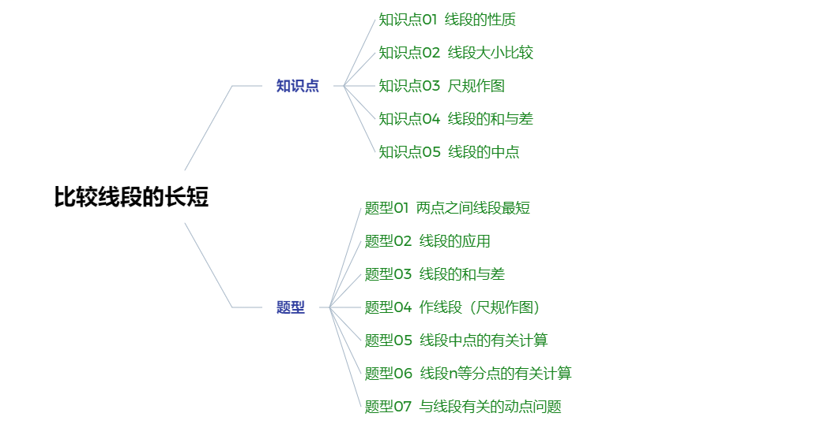
知识点01 线段的性质
两点之间的所有连线中，线段最短.简单地：两点之间线段最短.我们把两点之间线段的长度，叫做这两点之间的距离.
【即学即练1】
1．（2024·重庆·二模）高速公路是指专供汽车高速行驶的公路．高速公路在建设过程中，通常要从大山中开挖隧道穿过，把道路取直以缩短路程．其中的数学原理是（ ）

A．两点之间，线段最短 B．两点确定一条直线
C．平行线之间的距离最短 D．垂线段最短
【答案】A
【分析】本题考查线段的性质，解题的关键是掌握：两点之间，线段最短．
【详解】解：在高速公路的建设中，通常从大山中开挖隧道穿过，把道路取直，以缩短路程，这是因为：两点之间，线段最短．
故选A．
知识点02 线段大小比较
1.比较线段大小的方法：（1）目测法；（2）度量法；（3）叠合法
2.叠合比较法：利用直尺和圆规把线段放在同一条直线上，使其中一个端点重合，另一个端点位于重合端点同侧，根据另一端点与重合端点的远近来比较长短．如下图：

【说明】线段的比较方法除了叠合比较法外，度量比较法也是常用的方法．
【即学即练2】
1．（23-24六年级下·上海宝山·期末）如图，点 、
、 在线段
在线段 上，点
上，点 、
、 分别是
分别是 、
、
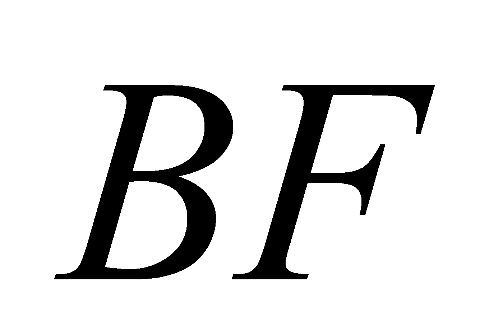
的中点， ，且
，且 ，那么线段
，那么线段 的长是 ．
的长是 ．【答案】
【分析】本题考查了线段和差的计算以及线段中点的定义，比例的性质，根据题意得 ，根据中点的性质可得
，根据中点的性质可得
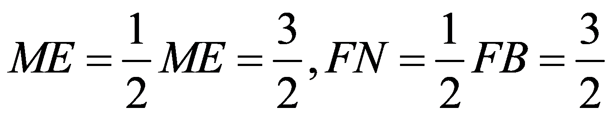
，进而根据，即可求解．【详解】解：∵，且，
∴
∵点、分别是、的中点，
∴
∴
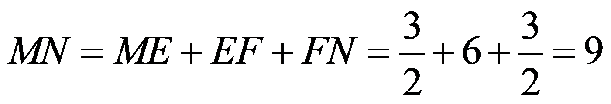
，故答案为：．
知识点03 尺规作图
仅用圆规和没有刻度的直尺作图的方法叫做尺规作图.
【说明】（1）只使用圆规和直尺，并且只准许使用有限次，来解决不同的平面几何作图题．
（2）直尺必须没有刻度，无限长，且只能使用直尺的固定一侧.只可以用它来将两个点连在一起，不可以在上面画刻度．
（3）圆规可以开至无限宽，但上面也不能有刻度.它只可以拉开成之前构造过的长度．
【即学即练3】
1．（23-24六年级下·山东烟台·期中）作图题：如图，平面上有四个点A，B，C，D，根据下列语句画图：

(1)做射线 ；
；
(2)取一点P，使点P既在直线上又在直线 上；
上；
(3)若A、C两点之间的距离为4，B、D两点之间的距离为3，点M到A，B，C，D四点距离之和最短．画出点M的位置，并写出该最短距离和是___________．
【答案】(1)见解析
(2)见解析
(3)图见解析，
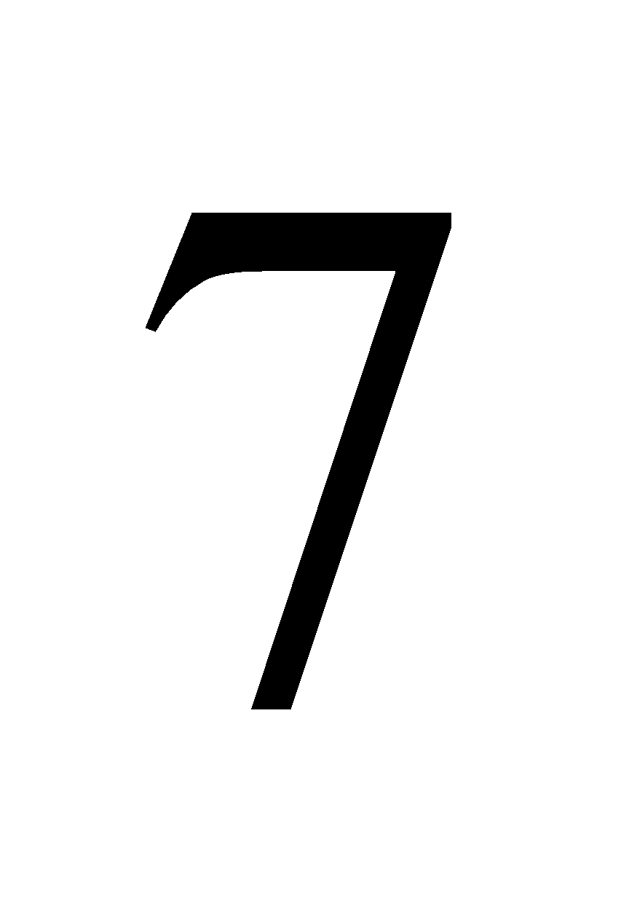
【分析】本题考查射线，直线和线段，以及线段的性质：
（1）根据射线的定义，作图即可；
（2）直线 的交点即为点
的交点即为点 ；
；
（3）两点之间线段最短，得到 ，
， 的交点即为点，再进行求解即可．
的交点即为点，再进行求解即可．
【详解】（1）解：作射线，如图；
（2）直线和直线 的交点就是点P；
的交点就是点P；
（3）连接，交于M，点M即为所求，最短距离和是
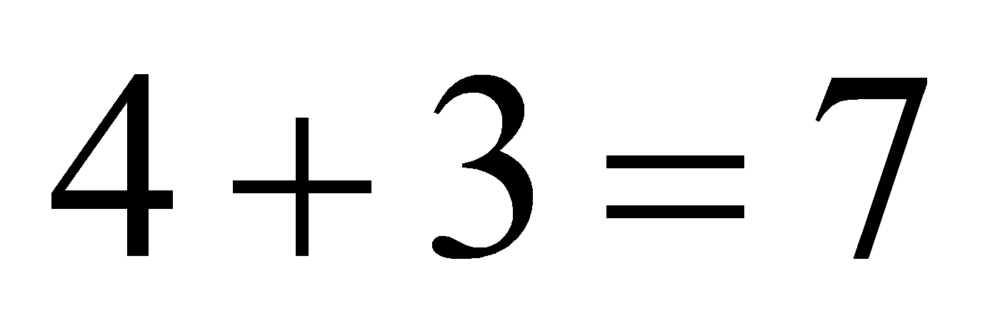

知识点04 线段的和与差
如下图：线段AB上有一点C，则AC+BC=AB；AC=AB - BC； BC=AB - AC，
在这里线段AC、BC、AB表示线段的长度，如AC+BC=AB表示AC长度与BC长度之和等于AB长度.
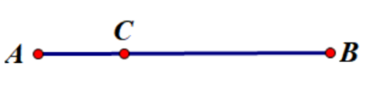
【即学即练4】
1．（23-24六年级下·山东淄博·期中）如图，点 是线段上两点，点
是线段上两点，点 为线段的中点，
为线段的中点， ，
， ．
．
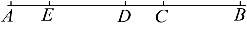
(1)图中共有_______条线段；
(2)求的长；
(3)若 ，求
，求 的长．
的长．
【答案】(1) ；
；
(2) ；
；
(3) ．
．
【分析】（ ）根据线段的定义即可求解；
）根据线段的定义即可求解；
（）根据线段中点定义及线段和差关系即可求解；
（）利用线段和差关系求出，再根据线段的比即可求解；
本题考查了线段，线段的和差，中点的定义，正确识图是解题的关键．
【详解】（1）解：由图可得，线段共有 条，
条，
故答案为：；
（2）解：∵点为线段的中点，，
∴ ，
，
∵，
∴
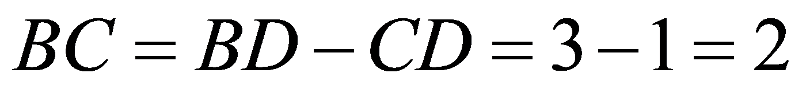
；（3）解：∵，
∴ ，
，
∵，
∴
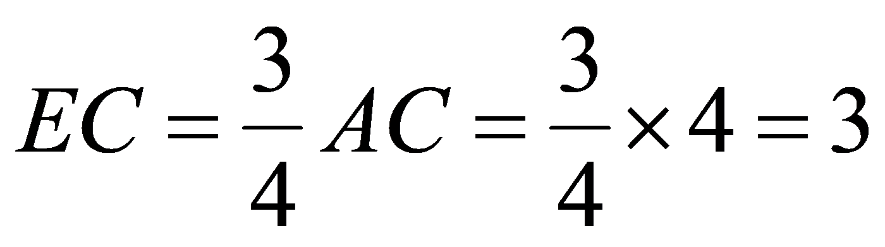
．知识点05 线段的中点
线段的中点：把一条线段分成两条相等线段的点，叫做线段的中点．如下图所示，点C是线段AB的中点，则AC=CB= AB，或AB=2AC=2BC．
AB，或AB=2AC=2BC．
【说明】若点C是线段AB的中点，则点C一定在线段AB上．
【即学即练5】
1．（23-24七年级上·福建厦门·开学考试）线段上，M为的中点，N为 的中点，
的中点， ，
， ，
， （ ）．
（ ）．
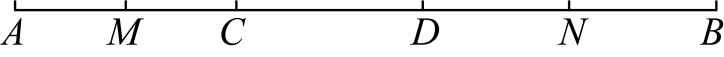
A．
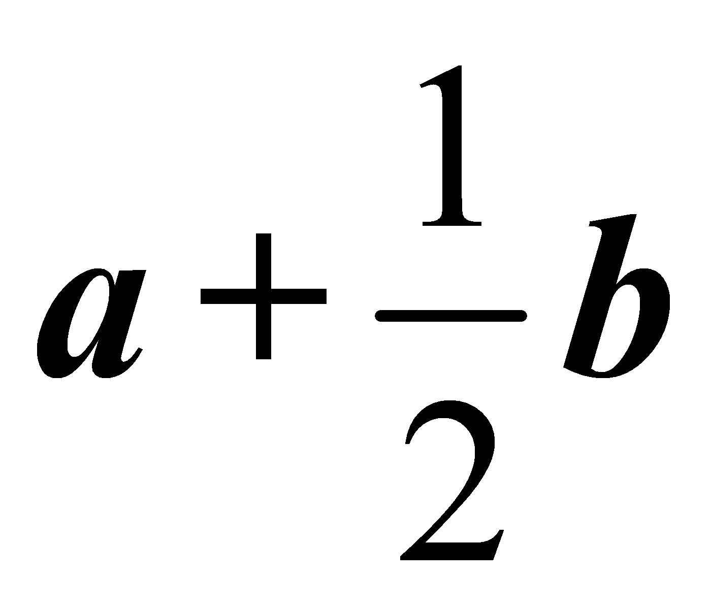
B． C．
C． D．
D．
【答案】D
【分析】本题考查与线段中点有关的计算，解题的关键是掌握线段中点的性质．先由
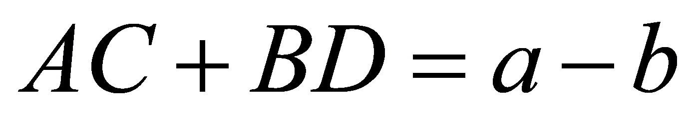
，再根据中点的性质得 ，
， ，最后由线段的和差关系即可求出结果．
，最后由线段的和差关系即可求出结果．【详解】解：∵，，
∴，
∵点M是的中点，点N是的中点，
∴，，
∴ ．
．
故选：D．
2．（23-24七年级上·四川自贡·期末）如图， ，
，
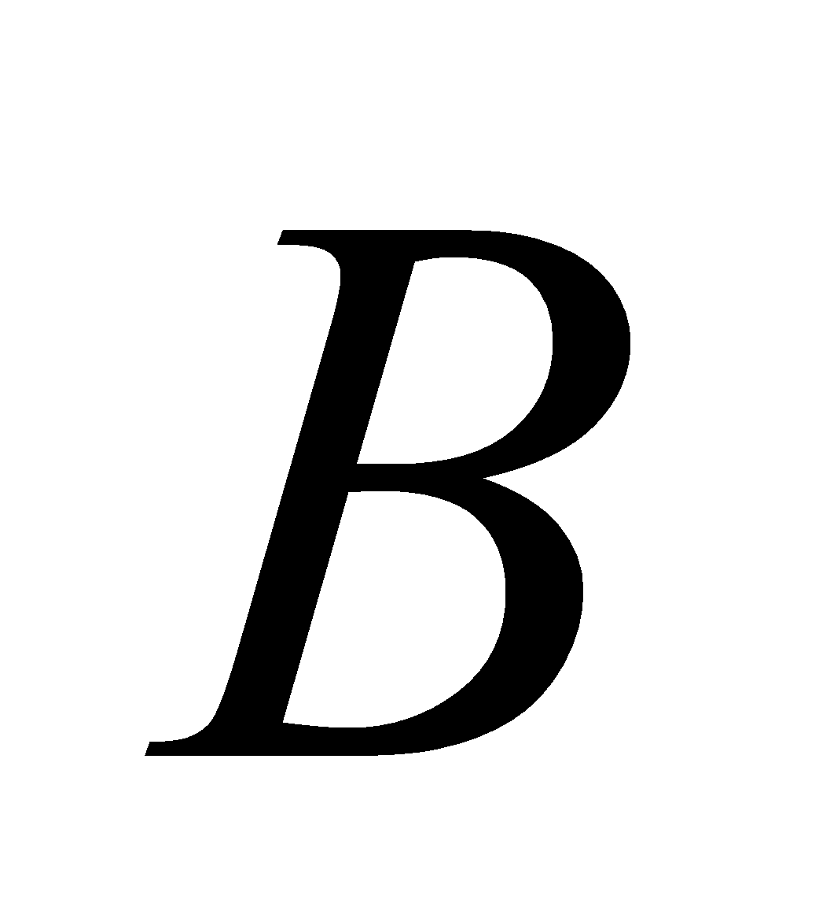
， ，是直线
，是直线 上的四个点，，分别是，的中点．
上的四个点，，分别是，的中点．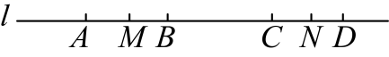
(1)如果 ，，
，，
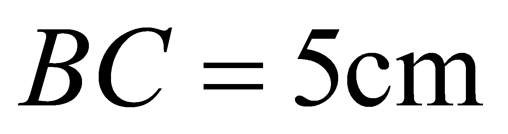
，则 的长为________cm；
的长为________cm；(2)如果 ，
， ，则的长为_________cm；
，则的长为_________cm；
(3)如果 ，
， ，求的长，并说明理由．
，求的长，并说明理由．
【答案】(1)
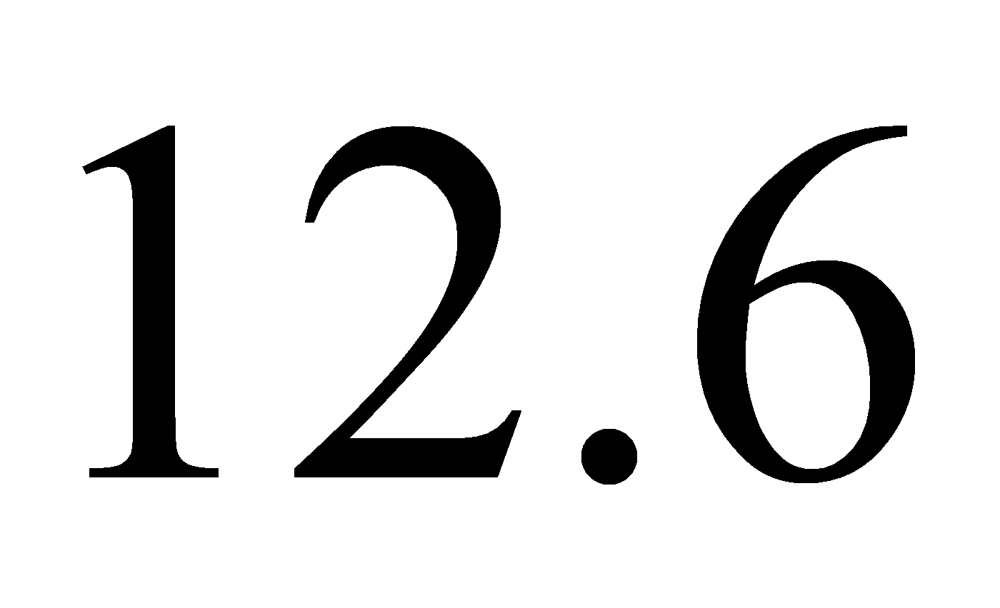
(2)14
(3)
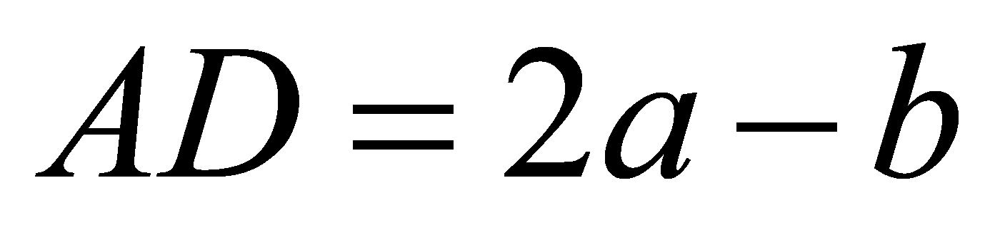
．【分析】本题考查了两点间的距离，利用线段的和差得出 的长，利用线段中点的性质，得出
的长，利用线段中点的性质，得出 ，
， ．
．
（1）根据线段的和，可得 的长，根据线段中点的性质，可得与的关系，与
的长，根据线段中点的性质，可得与的关系，与 的关系，根据线段的和，可得答案；
的关系，根据线段的和，可得答案；
（2）先根据线段的和与差，计算出的长，再根据线段中点的性质，可得与的关系，与的关系，根据线段的和，可得答案；
（3）根据（2）的解题过程，即可解答．
【详解】（1）解：
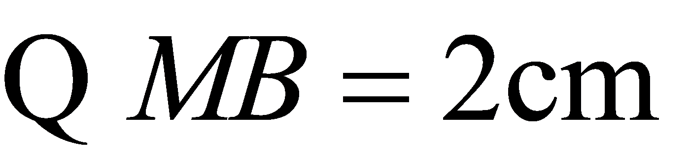
，， ，
，
，分别是，的中点，
 ，，
，，
 ，
，
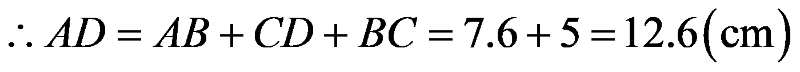
，故答案为：；
（2）解： ，，
，，
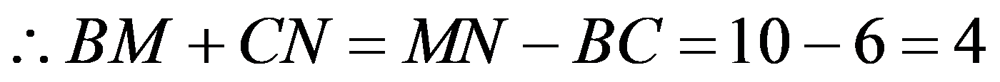
，，分别是，的中点，
，，
 ，
，
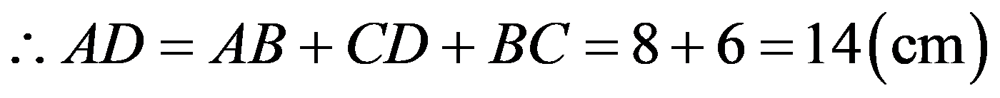
，故答案为：14；
（3）解：
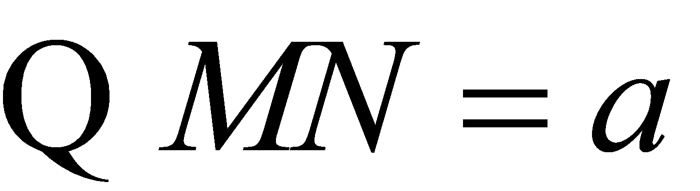
，， ，
，
，分别是，的中点，
，，
 ，
，
 ，
，
 ，
，
 ．
．
题型01 两点之间线段最短
【典例1】（23-24七年级上·福建漳州·期末）在下列现象中，可以用基本事实“两点之间线段最短”来解释的是（ ）
A．木匠弹墨线 B．打靶瞄准
C．弯曲公路改直 D．拉绳插秧
【答案】C
【知识点】两点之间线段最短、两点确定一条直线
【分析】本题考查的是线段的性质：两点的所有连线中，可以有无数种连法，如折线、曲线、线段等，这些所有的线中，线段最短．简单说成：两点之间，线段最短．，根据线段的性质解答即可．
【详解】解：A、B、D依据两点确定一条直线；
C依据两点之间，线段最短．
故选：C．
【变式1】（2024·河北·模拟预测）“愚公移山”是我国著名的寓言故事，它告诉了我们坚持不懈的道理．如图，假设愚公在运输山石等杂物时（从点 运输到点
运输到点 ），有
），有 条路可行，线路
条路可行，线路 ：折线
：折线 ．线路
．线路 ：折线
：折线 ．线路
．线路 ：
： ．线路：线段AB．如果仅从距离最短考虑，愚公选取的线路应是（ ）
．线路：线段AB．如果仅从距离最短考虑，愚公选取的线路应是（ ）
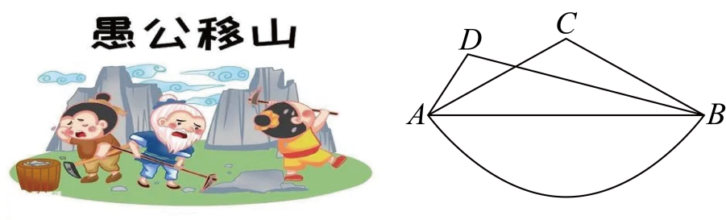
A．线路 B．线路 C．线路 D．线路
【答案】D
【知识点】两点之间线段最短
【分析】本题考查了两点之间线段最短，根据两点之间线段最短即可判断求解，掌握两点之间线段最短是解题的关键．
【详解】解：∵两点之间线段最短，
∴仅从距离最短考虑，愚公选取的线路应是线路，
故选： ．
．
【变式2】（23-24八年级下·重庆开州·开学考试）直线
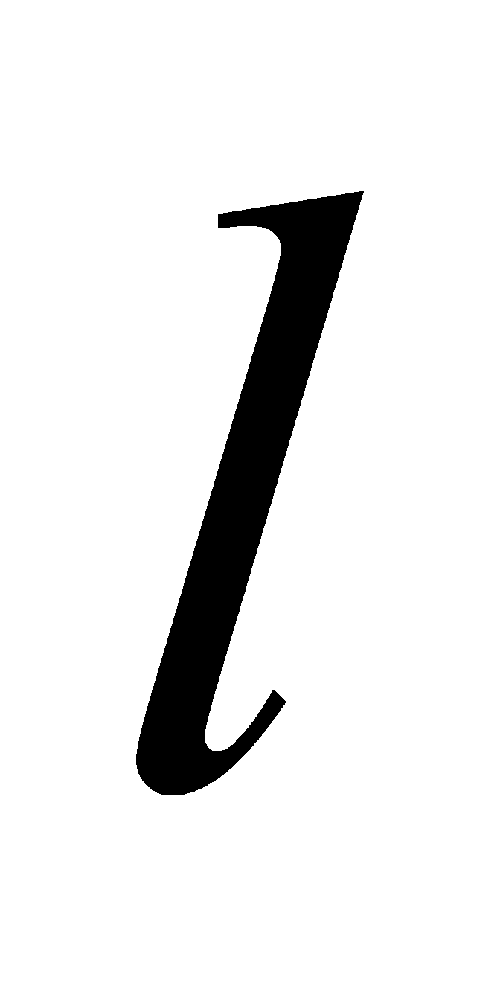
是一条河， ，
， 是在同侧的两个村庄，欲在上的
是在同侧的两个村庄，欲在上的 处修建一个水泉站，向，两地供水，现有如下四种铺设方案，图中实线表示铺设的管道，则处到，两地距离之和最短的方案是（ ）
处修建一个水泉站，向，两地供水，现有如下四种铺设方案，图中实线表示铺设的管道，则处到，两地距离之和最短的方案是（ ）A．
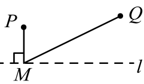
B．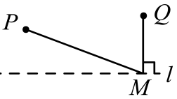
C． D．
D．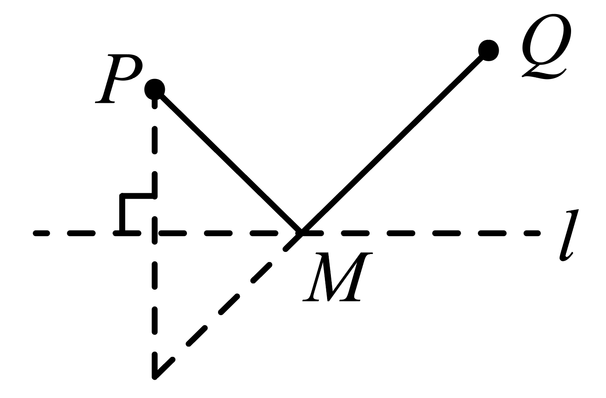
【答案】D
【知识点】两点之间线段最短
【分析】根据轴对称的性质，线段垂直平分线的性质及最短路径问题解答．
本题考查了轴对称的性质的应用．熟练掌握线段和最短的解法是解题的关键．
【详解】解：根据题意，符合题意的作法是
故选：D．
【变式3】（24-25八年级上·河南郑州·阶段练习）如图，一只电子蚂蚁从正方体的顶点处沿着表面爬到顶点处，电子蚂蚁的爬行路线在平面展开图（部分）中如实线所示，其中路线最短的是（ ）
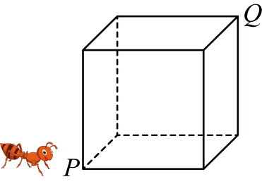
A． B．
B．
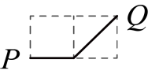
C．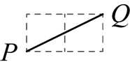
D．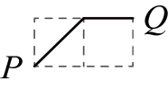
【答案】C
【知识点】两点之间线段最短、最短路径问题
【分析】本题考查了两点之间线段最短，通过平面展开图和两点之间线段最短即可求解，正确理解两点之间线段最短是解题的关键．
【详解】解：一只蚂蚁要从正方体的一个顶点沿表面爬行到顶点，
根据两点之间，线段最短，则沿线段 爬行，就可以使爬行路线最短，
爬行，就可以使爬行路线最短，
故选： ．
．
题型02 线段的应用
【典例2】（23-24七年级下·山东泰安·期中）一条铁路有 个火车站，若一列火车往返过程中必须停靠每个车站，则铁路局需为这条线路准备车票（ ）种．
个火车站，若一列火车往返过程中必须停靠每个车站，则铁路局需为这条线路准备车票（ ）种．
A． B． C．
C． D．
D．
【答案】C
【知识点】直线、线段、射线的数量问题
【分析】本题考查了线段的概念：直线上两点间的有限部分（包括两个端点），熟记概念是解题关键．
【详解】如图，线段上点到 点个点代表个火车站，
点个点代表个火车站，
图中的线段一共有：
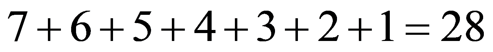
（条）每两个车站有往返两种情况，所以，车票的种类一共：
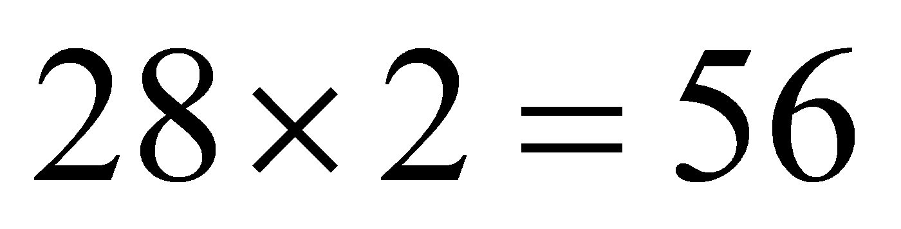
（种）故选：C．
【变式1】（23-24六年级下·山东东营·阶段练习）乘特快列车从济南西站出发，沿途经过泰安站、曲阜东站、滕州东站，最后到达枣庄站，那么从济南西站到枣庄站这段线路的火车票最多有（ ）
A．6种 B．20种 C．10种 D．12种
【答案】C
【知识点】直线、线段、射线的数量问题
【分析】本题考查了线段条数的问题，根据题意确定出数学模型，求出五点确定出线段的条数即可得到答案．
【详解】解：∵一共有五个站，相当于有5个点，
∴从济南西站到枣庄站这段线路的火车票张数即为5个点所能组成的线段条数，
∵2点能确定一条线段，
∴5个点一共最多能确定
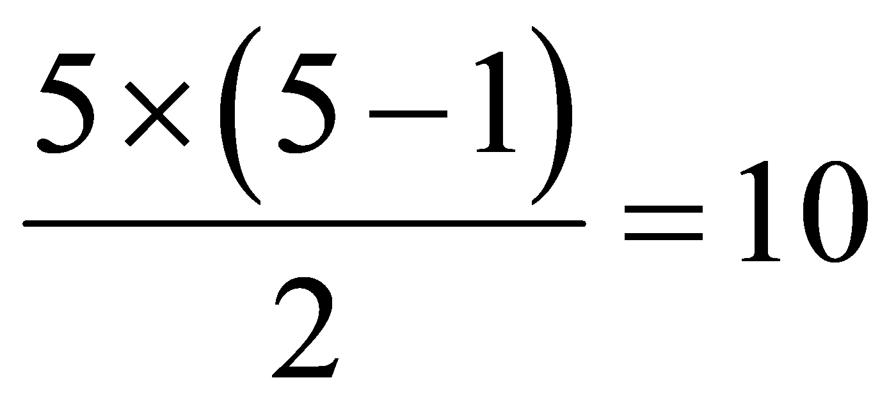
条线段，∴从济南西站到枣庄站这段线路的火车票最多有10种，
故选：C
【变式2】（23-24七年级上·广西百色·期末）由百色站至南宁站的某趟动车，运行途中停靠的车站依次是：百色站—田阳站—田东站—平果站—隆安站—南宁站，那么铁路运营公司要为这条路线制作的往返车票有 种．
【答案】30
【知识点】直线、线段、射线的数量问题
【分析】本题考查线段、直线、射线，掌握线段条数的计算方法是解决问题的关键．将每一个车站看作一个点，铁路线为线段，求出所有线段条数的2倍即可．
【详解】解：如图：
图中线段的条数为
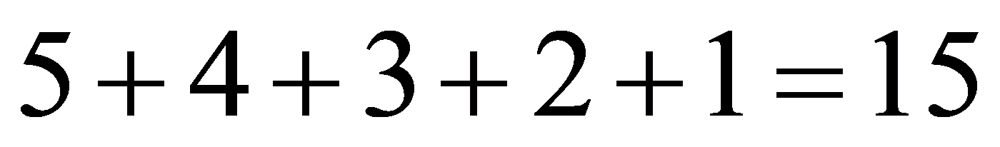
（条），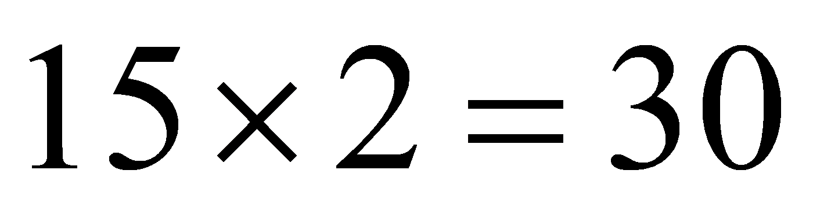
（种），即铁路运营公司为这条路线制作的往返车票有30种．
故答案为：30．
【变式3】（23-24七年级上·河南许昌·期末）前段时间，一条好消息迅速在长葛人朋友圈刷屏：大长葛也有地铁了！郑许市域铁路12月26日-27日免费试乘，“双城生活模式”正式启动．图中展示了郑许市域铁路长葛市域内的五个站点，若要满足乘客在这五个站点之间的往返需求，铁路公司需要准备 种不同的车票．
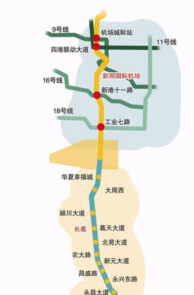
【答案】20
【知识点】直线、线段、射线的数量问题
【分析】此题考查了数线段，解决本题的关键是掌握“直线上有 个点，则线段的数量有
个点，则线段的数量有
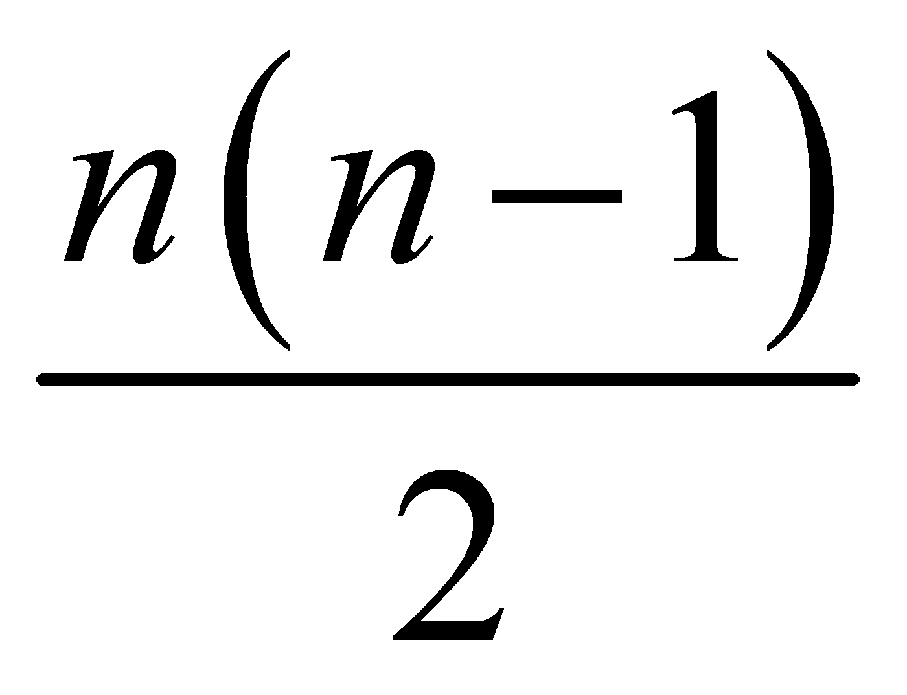
条”．先求得单程的车票数，在求出往返的车票数即可．【详解】解：5个点中线段的总条数是
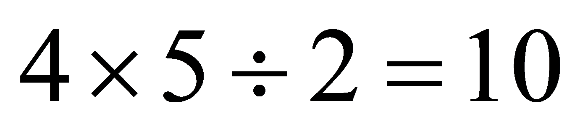
（种），∵任何两站之间，往返两种车票，
∴应印制 （种），
（种），
故答案为：20．
题型03 线段的和与差
【典例3】（24-25七年级上·全国·课后作业）已知点C在线段 上，
上， ，则
，则 ．
．
【答案】4
【知识点】线段的和与差
【分析】本题主要考查了线段的和差计算，根据线段的和差关系列式求解即可．
【详解】解；∵点C在线段上，，
∴
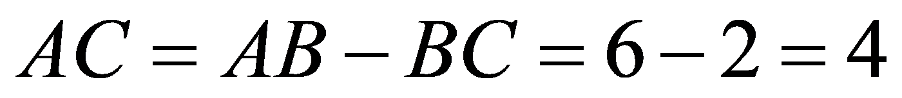
，故答案为：．
【变式1】（23-24七年级上·全国·期末）线段AB的长为 ，延长AB到
，延长AB到 ，使
，使
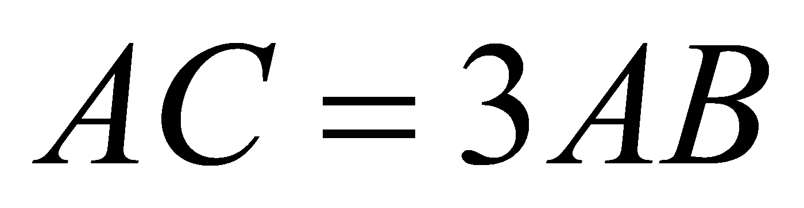
，再反向延长AB到 ，使
，使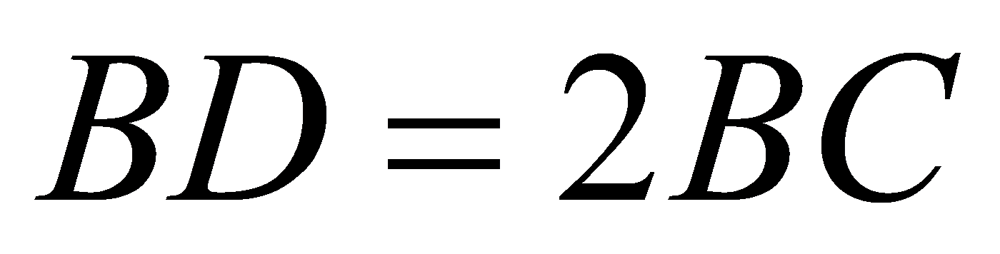
，则线段CD的长为 ．
．【答案】
【知识点】两点间的距离、线段的和与差
【分析】本题考查的是两点间的距离，熟知各线段之间的和、差关系是解答此题的关键．
根据已知分别得出的长，即可得出线段 的长．
的长．
【详解】解：∵线段 ，延长到C，使，再反向延长到D，使，
，延长到C，使，再反向延长到D，使，
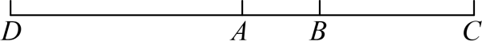
∴
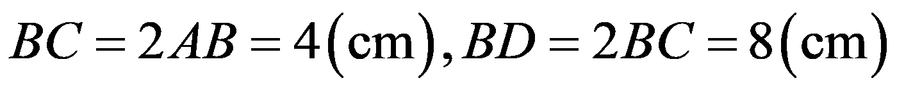
，∴
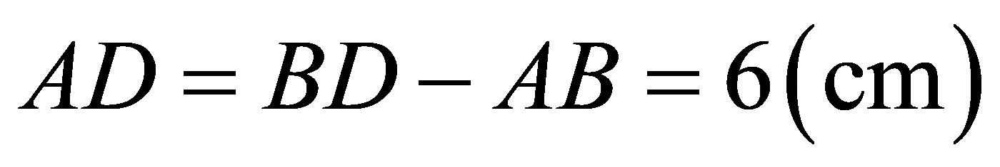
，∴
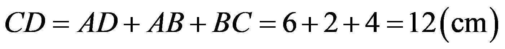
，故答案为：．
【变式2】（23-24七年级上·全国·单元测试）同一条直线上有三点 且线段
且线段 ，点是
，点是 的中点，
的中点， 厘米，则线段
厘米，则线段 的长为 ．
的长为 ．
【答案】或/或
【知识点】线段中点的有关计算、线段的和与差
【分析】本题考查了线段的中点，和差运算，根据题意，由点为中点，，可得
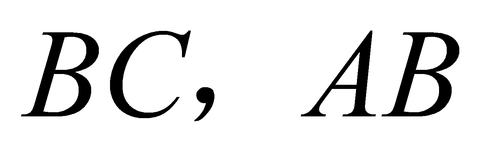
的值，图形结合，分类讨论即可求解．【详解】解：如图所示，
∵点是的中点，，
∴
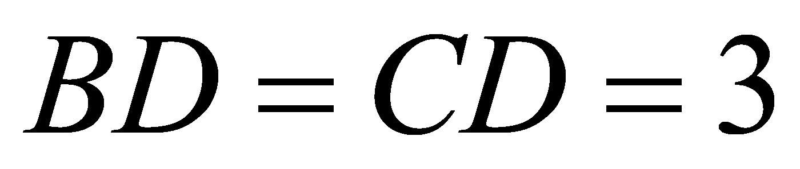
，∴ ，
，
∵
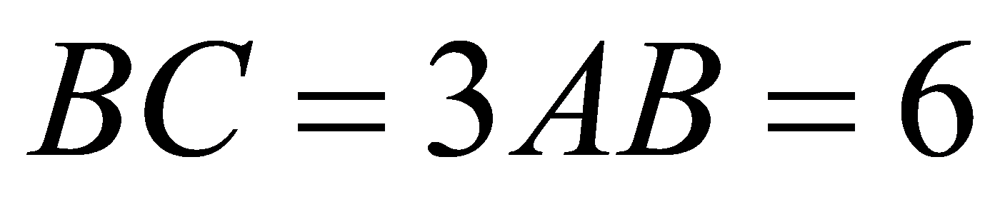
，∴ ，
，
∴；
如图所示，
∵，
∴，
∴
∴；
故答案为：或 ．
【变式3】（24-25九年级上·全国·课后作业）已知线段 ．
．
(1)若点是线段上一点， ，则
，则 的长为 ；
的长为 ；
(2)若点是线段的中点，则 的长为 ；
的长为 ；
(3)若点是线段的一个三等分点，则的长为 ．
【答案】(1)7
(2)4.5
(3)3或6
【知识点】线段n等分点的有关计算、线段中点的有关计算、线段的和与差
【分析】本题考查线段的和差，线段中点、以及三等分点的特点，解题的关键在于利用分类讨论的思想解决问题．
（1）根据线段的和差计算即可；
（2）根据线段中点的特点计算即可；
（3）根据点为的三等分点分两种情况讨论：①点靠近点；②点靠近点，结合线段的和差计算即可．
【详解】（1）解：；
故答案为： ．
．
（2）解： 点是线段的中点，
点是线段的中点，
；
故答案为：4.5．
（3）解：点是线段的一个三等分点，
①当点靠近点时，
；
②当点靠近点时，
；
综上所述，的长为3或6．
故答案为：3或6．
题型04 作线段（尺规作图）
【典例4】（24-25七年级上·全国·课后作业）如图，已知线段 ，用直尺和圆规作图（保留作图痕迹），并用字母表示所作线段．
，用直尺和圆规作图（保留作图痕迹），并用字母表示所作线段．
(1)作一条线段，使它等于 ；
；
(2)作一条线段，使它等于 ．
．
【答案】(1)见解析
(2)见解析
【知识点】作线段(尺规作图)
【分析】本题主要考查了线段的尺规作图：
（1）如图所示，先作射线 ，再以A为圆心，线段a的长为半径画弧交射线于B，再以B为圆心，线段c的长为半径画弧交射线于C，最后以C为圆心，线段c的长为半径画弧交射线于D，则线段
，再以A为圆心，线段a的长为半径画弧交射线于B，再以B为圆心，线段c的长为半径画弧交射线于C，最后以C为圆心，线段c的长为半径画弧交射线于D，则线段 即为所求；
即为所求；
（2）如图所示，先作射线，再以A为圆心，线段a的长为半径画弧交射线于B，再以B为圆心，线段b的长为半径画弧交射线于E，则线段即为所求．
【详解】（1）解：如图所示，先作射线，再以A为圆心，线段a的长为半径画弧交射线于B，再以B为圆心，线段c的长为半径画弧交射线于C，最后以C为圆心，线段c的长为半径画弧交射线于D，则线段即为所求；
（2）解：如图所示，先作射线，再以A为圆心，线段a的长为半径画弧交射线于B，再以B为圆心，线段b的长为半径画弧交射线于E，则线段即为所求．
【变式1】（23-24七年级上·天津·期末）按要求画一画，再填空：
(1)画线段；
(2)延长线段到点C，使 ；
；
(3)延长线段 到点，使；
到点，使；
(4)根据上述画法可知， ，
，
 ．
．
【答案】(1)见解析
(2)见解析
(3)见解析
(4)2； ；
；
【知识点】画出直线、射线、线段、线段的和与差、作线段(尺规作图)
【分析】此题重点考查尺规作图、用直尺和圆规作一条线段等于已知线段、线段的中点、线段的和差等知识与方法，正确地按要求作出图形是解题的关键．
（1）作射线 并在上取一点，即得到线段；
并在上取一点，即得到线段；
（2）在的延长线上截取，即得到所求的点；
（3）以为端点，过点作射线 ，在的延长线上截取，即得到所求的点；
，在的延长线上截取，即得到所求的点；
（4）由，，得 ，则是线段
，则是线段 的中点，所以；由，
的中点，所以；由， ，得，于是得到问题的答案．
，得，于是得到问题的答案．
【详解】（1）解：如图1，作射线，在上取一点，
线段就是所求的线段；
（2）解：如图2，在的延长线上截取，
点就是所求的点；
（3）解：如图3，以为端点，过点作射线，在的延长线上截取，
点就是所求的点；
（4）解：，，
，
是线段的中点，
；
，，
，
，
，
故答案为：2，，．
【变式2】（23-24七年级上·福建福州·期末）如图，已知线段，其中， ．
．
(1)作线段，使得 ；(尺规作图，不写作法，保留作图痕迹)
；(尺规作图，不写作法，保留作图痕迹)
(2)若点P是（1）中所作的线段的中点，求线段 的长．
的长．
【答案】(1)见解析
(2)
【知识点】线段中点的有关计算、线段的和与差、作线段(尺规作图)
【分析】本题考查了尺规作图—作线段，线段的中点，线段的和差．解题的关键在于明确线段之间的数量关系．
（1）依次按步骤尺规作图即可；
（2）先求出，然后根据线段中点定义求解即可．
【详解】（1）解：如图，线段即为所求．
（2）解：，，
，
，
 ，
，
点P是线段的中点，
．
【变式3】（23-24七年级上·河南三门峡·阶段练习）如图，在平面内有三个点A，B，
(1)请利用无刻度的直尺和圆规，按下面的要求作图
（保留作图痕迹，不写画法，不写结论）：
①连接 ，作射线；
，作射线；
②在射线上作线段 ，使．
，使．
(2)在（1）中所作的图形中，若 ，
， ，点P是线段的中点，请在图中标出点P，并求线段
，点P是线段的中点，请在图中标出点P，并求线段 的长．
的长．
【答案】(1)见解析
(2)2
【知识点】线段中点的有关计算、画出直线、射线、线段、作线段(尺规作图)
【分析】本题考查作图-复杂作图，线段，射线等知识，解题的关键是熟练掌握基本知识．
（1）①根据线段，射线的定义画出图形即可．②根据要求作出图形即可．
（2）利用线段和差定义以及线段的中点的性质解决问题即可．
【详解】（1）解：（1）①如图，线段，射线即为所求作．
②如图，线段即为所求作．
（2）解：∵，
又∵，
∴，
∴．
题型05 线段中点的有关计算
【典例5】（23-24七年级下·四川成都·阶段练习）如图，线设，点C是线段的中点，点D是线段的中点．

(1)如图①，求线段的长；
(2)如图②，点N是线段上的一点，且满足 ，求
，求 的长度．
的长度．
【答案】(1)
(2)
【知识点】线段中点的有关计算、线段n等分点的有关计算、线段的和与差
【分析】本题考查两点间的距离，掌握线段中点的定义是正确解答的关键．
（1）根据线段中点的定义以及图形中线段的和差关系进行计算即可；
（2）由线段的比例关系以及线段中点的定义进行计算即可．
【详解】（1）解：点C是线段的中点，
，
又点D是线段的中点，，
；
（2）解：，
，
∴
．
【变式1】（24-25七年级上·全国·课后作业）如果一点在由两条公共端点的线段组成的一条折线上且把这条折线分成长度相等的两部分，我们称该点为这条折线的“折中点”．已知点D是图中折线 的“折中点”，请解答以下问题：
的“折中点”，请解答以下问题：
(1)①若 ，点D在线段______（填“”或“”）上；
，点D在线段______（填“”或“”）上；
②若 ，则的长度为______．
，则的长度为______．
(2)若E为线段的中点，，求 的长度．
的长度．
【答案】(1)①，②2或14
(2)的长度是4或28
【知识点】线段的和与差、线段中点的有关计算
【分析】本题主要考查了线段的和差计算，线段中点的定义：
（1）①根据“折中点”的定义进行求解即可；②分当点D在上时，当点D在上时，两种情况画出对应的示意图，进行讨论求解即可；
（2）先根据线段中点的定义得到的长，再同分当点D在上时，当点D在上时，两种情况画出对应的示意图，进行讨论求解即可．
【详解】（1）解：∵，点D是图中折线的“折中点”，
∴点D在线段上，
故答案为：；
②如图所示，当点D在上时，
∵，
∴，
∵，
∴
如图所示，当点D在上时，
∵，
∴，
∴；
综上所述，的长为2或14；
（2）解：E为线段中点，，
∴．
①点D在线段上时，如图所示，
∵ ，
，
∴．
∵D为折中点，
∴．
∴；
②点D在线段上时，如图所示，
∴，
∴．
∴．
∴．
综上所述，的长度是4或28．
【变式2】（23-24七年级上·安徽·单元测试）如图，为线段AB上一点， 分别为
分别为 的中点．
的中点．

(1)若 ，求
，求 的长；
的长；
(2)若 ，求的值．
，求的值．
【答案】(1)4
(2)
【知识点】线段的和与差、线段中点的有关计算
【分析】本题主要考查线段中点，线段和差的计算，
（1）根据题意，，由此即可求解；
（2）由（1）可得，，由此可得，，代入计算即可求解．
【详解】（1）解：∵点 分别是的中点，
分别是的中点，
∴，
∵，
∴，
∵，
∴；
（2）解：由（1）可得，，，
∵，
∴，
∴．
【变式3】（24-25七年级上·全国·单元测试）如图，，，，是直线上的四个点，， 分别是，的中点．
分别是，的中点．
(1)如果，，，则的长为________；
(2)如果，，则的长为_________；
(3)如果 ，
， ，求的长，并说明理由．
，求的长，并说明理由．
【答案】(1)
(2)14
(3) ，理由见解析
，理由见解析
【知识点】线段中点的有关计算、两点间的距离
【分析】本题考查了两点间的距离，利用线段的和差得出的长，利用线段中点的性质，得出，．
（1）根据线段的和，可得的长，根据线段中点的性质，可得与的关系，与 的关系，根据线段的和，可得答案；
的关系，根据线段的和，可得答案；
（2）先根据线段的和与差，计算出的长，再根据线段中点的性质，可得与的关系，与的关系，根据线段的和，可得答案；
（3）根据（2）的解题过程，即可解答．
【详解】（1）解：，，
 ，
，
 ，分别是，的中点，
，分别是，的中点，
，，
 ，
，
 ，
，
故答案为：；
（2）解：，，
 ，
，
，分别是，的中点，
，，
，
 ，
，
故答案为：14；
（3）解：，，
 ，
，
，分别是，的中点，
，，
，
，
 ，
，
 ．
．
题型06 线段n等分点的有关计算
【典例6】（2023七年级上·全国·专题练习）二等分点：又叫线段的 ，把线段分成 的两部分．
即：如图，若点P是线段的中点，则 或
或
三等分点：把线段分成 的三部分．以此类推．
【答案】 中点 相等 相等
【知识点】线段之间的数量关系、线段n等分点的有关计算
【分析】本题考查了线段的中点，线段的三等分点，正确理解定义是解题的关键．
【详解】二等分点：又叫线段的中点，把线段分成相等的两部分．
即：如图，若点P是线段AB的中点，
则或
三等分点：把线段分成相等的三部分．以此类推．
故答案为：中点；相等；相等．
【变式1】（23-24六年级下·黑龙江哈尔滨·阶段练习）已知线段 ，延长至点C，使
，延长至点C，使 ，点D、E均为线段延长线上两点，且，M、N分别是线段
，点D、E均为线段延长线上两点，且，M、N分别是线段 的中点，当点C是线段的三等分点时，的长为 ．
的中点，当点C是线段的三等分点时，的长为 ．
【答案】40或80
【知识点】线段的和与差、线段中点的有关计算、线段n等分点的有关计算
【分析】本题考查了线段的和差问题，画出线段有助于更直观地解题，注意分情况讨论．分时和时两种情况，画出对应的图形分别讨论求解即可．
【详解】解：∵，，N是线段的中点，
∴，，
①若，如图1所示：
∵，
∴ ，
，
∵，
∴
∴，
∵M是线段 的中点，N是线段的中点，
的中点，N是线段的中点，
∴ ，，
，，
∴；
②若，如图：
∴ ，
，
∵，
∴，
∴，
∵M是线段的中点，N是线段的中点，
∴，，
∴ ；
；
故答案为：40或80．
【变式2】（23-24七年级上·河南商丘·期末）如图，为线段上一点，点为的中点，已知．
(1)求的长；
(2)若点是线段上靠近点A的三等分点，求 的长．
的长．
【答案】(1)
(2)
【知识点】线段n等分点的有关计算、线段中点的有关计算、线段的和与差
【分析】本题考查的是线段的中点的含义，线段的和差关系，掌握以上知识是解题的关键．
（1）根据线段的和差，求得的长，再根据线段中点的性质，可求出的长；
（2）先求得 的长，再根据线段的和差，可得答案．
的长，再根据线段的和差，可得答案．
【详解】（1）解：因为，
所以，
因为点为的中点，
所以 ；
；
（2）解：因为 ，点是线段上靠近点A的三等分点，
，点是线段上靠近点A的三等分点，
所以，
则 ．
．
所以．
【变式3】（23-24七年级上·江西南昌·期末）已知线段，C是线段上任意一点（不与点A，B重合）．
(1)若M，N分别是 的中点，求的长度；
的中点，求的长度；
(2)若， ，求的长；
，求的长；
(3)在（2）的条件下，若 且G点在直线上，
且G点在直线上， ，求的长度．
，求的长度．
【答案】(1)
(2)
(3) 或
或
【知识点】线段的和与差、线段中点的有关计算、线段n等分点的有关计算
【分析】本题考查了线段的n等分点有关的计算，线段的和差，理解线段n等分点的定义是解答本题的关键．
（1）由中点的定义可得， ，然后根据
，然后根据 求解即可；
求解即可；
（2）由，可得， ，然后根据求解即可；
，然后根据求解即可；
（3）先求出线段的长，然后分点G在线段上和点G在线段的延长线上两种情况求解即可．
【详解】（1）∵M，N分别是的中点，
∴，，
∴ ．
．
∵，
∴；
（2）∵，，
∴，，
∴ ，
，
∵，
∴ ；
；
（3）∵，，
∴ ．
．
∵，
∴ ，
，
∴ ．
．
当点G在线段上时， ；
；
当点G在线段的延长线上时， ．
．
综上可知，的长度为或．
题型07 与线段有关的动点问题
【典例7】（22-23七年级上·河南郑州·阶段练习）如图①，已知点C在线段AB上，线段 厘米，
厘米， 厘米，点M，N分别是，的中点．
厘米，点M，N分别是，的中点．
(1)求线段的长度；
(2)根据第（1）题的计算过程和结果，设 ，其他条件不变，求的长度；
，其他条件不变，求的长度；
(3)动点P、Q分别从A、B同时出发，点P以2厘米/秒的速度沿AB向右运动，终点为B，点Q以1厘米/秒的速度沿 向左运动，终点为A，当一个点到达终点，另一个点也随之停止运动，求运动多少秒时：
向左运动，终点为A，当一个点到达终点，另一个点也随之停止运动，求运动多少秒时：
①点P恰好为线段 的中点？
的中点？
②直接写出C、P、Q三点中有一点恰好是以另两点为端点的线段的中点？（除①外）
【答案】(1) 厘米
厘米
(2)
(3)① ②
② 或
或
【知识点】与线段有关的动点问题、线段中点的有关计算
【分析】本题考查了线段的中点和计算，利用线段中点的性质得出关于t的方程是解题关键，要分类讨论，以防遗漏．
（1）根据中点的定义、线段的和差，可得答案；
（2）根据中点的定义、线段的和差，可得答案；
（3）①分为为线段 的中点和为线段
的中点和为线段 的中点，利用线段中点的定义，可得方程，根据解方程，可得答案；
的中点，利用线段中点的定义，可得方程，根据解方程，可得答案；
②分为C为线段的中点和点为线段 的中点，利用线段中点的定义，可得方程，根据解方程，可得答案．
的中点，利用线段中点的定义，可得方程，根据解方程，可得答案．
【详解】（1）解：∵线段  厘米， 厘米，点, 分别是, 的中点,
厘米， 厘米，点, 分别是, 的中点,
 厘米， 厘米，
厘米， 厘米，
厘米；
（2）∵点, 分别是 的中点,
的中点,
，
；
（3）解：①当  时，为线段的中点，，
时，为线段的中点，，
解得；
②当 时，是线段的中点，得
时，是线段的中点，得 
解得 
当  时，为线段的中点，
时，为线段的中点，
解得
当 时，为线段的中点，
时，为线段的中点，
解得(舍) ,
综上所述：或
【变式1】（2023七年级上·全国·专题练习）如图，是线段上一点， ，，两动点分别从点，同时出发沿射线向左运动，到达点处即停止运动．
，，两动点分别从点，同时出发沿射线向左运动，到达点处即停止运动．
(1)若点，的速度分别是 ，
， ．
．
①若 ，当动点，运动了
，当动点，运动了 时，求
时，求 的值；
的值；
②若点到达中点时，点也刚好到达的中点，求 ；
；
(2)若动点，的速度分别是， ，点，在运动时，总有
，点，在运动时，总有 ，求的长度．
，求的长度．
【答案】(1)
 ；
；
 ；
；
(2) ．
．
【知识点】线段的和与差、线段中点的有关计算、与线段有关的动点问题
【分析】（） 先计算
先计算 ，再计算即可；
，再计算即可； 利用中点的性质求解即可；
利用中点的性质求解即可；
（）设运动时间为 ，则
，则 ，，得到
，，得到 ，又由，得到，进而得到
，又由，得到，进而得到 即可求解；
即可求解；
本题考查了线段上动点问题、求线段的长度，充分利用中点和线段的倍数关系是解题的关键．
【详解】（1）解：由题意得： ，
， ，
，
；
∵点到达中点时，点也刚好到达的中点，设运动时间为 ，
，
则： ，
， ，
，
；
（2）解：设运动时间为，则，，
 ，
，
，
 ．
．
【变式2】（2023七年级上·全国·专题练习）已知：如图1，M是定长线段上一定点，C、D两点分别从M、B出发以 、
、 的速度沿直线向左运动，运动方向如箭头所示（C在线段上，D在线段
的速度沿直线向左运动，运动方向如箭头所示（C在线段上，D在线段 上）
上）
(1)若 ，当点C、D运动了，求的值．
，当点C、D运动了，求的值．
(2)若点C、D运动时，总有，直接填空： ___________．
___________．
(3)在（2）的条件下，N是直线上一点，且，求 的值．
的值．
【答案】(1)
(2)
(3)或1
【知识点】与线段有关的动点问题、线段的和与差
【分析】（1）本题考查线段的和与差，以及动点问题，根据题意算出，，再由，即可解题．
（2）本题考查线段的和与差，以及动点问题，设运动时间为t，则 ，，根据，，结合，即可解题．
，，根据，，结合，即可解题．
（3）本题考查线段的和与差，以及动点问题，根据N是直线上一点，且，可分为以下两种情况讨论，当点N在线段上时和当点N在线段的延长线上时，结合线段之间的和差关系，得出与的数量关系，即可解题．
【详解】（1）解：（1）当点C、D运动了时，，，
，，，
．
（2）解：设运动时间为t，
则，，
，，
又，
，
即，
，
，
，
故答案为：．
（3）解：当点N在线段上时，如图
，
又，
，
，即．
当点N在线段的延长线上时，如图：
，
又，
，即 ．综上所述的值为或．
．综上所述的值为或．
【变式3】（23-24七年级上·江西南昌·期末）已知：如图，点M是线段上一定点，，C、D两点分别从M、B出发以、的速度沿直线向左运动，运动方向如箭头所示（C在线段上，D在线段上）
(1)若，当点C、D运动了 ，此时 ， ；（直接填空）
，此时 ， ；（直接填空）
(2)当点C、D运动了，求的值；
(3)若点C、D运动时，总有，则 ；（直接填空）
(4)在（3）的条件下，是直线上一点，且，求的值．
【答案】(1) ；
；
(2)
(3)
(4)或1
【知识点】与线段有关的动点问题、线段之间的数量关系、线段的和与差
【分析】本题考查了线段上的动点问题，线段的和差，较难的是题（4），依据题意，正确分两种情况讨论是解题关键．
（1）先求出、的长，再根据线段的和差即可得；
（2）先求出与的关系，再根据线段的和差即可得；
（3）根据已知得，然后根据，代入即可求解；
（4）分点N在线段上和点N在线段的延长线上两种情况，再分别根据线段的和差倍分即可得．
【详解】（1）解：根据题意知，，，
∵，，
∴，
∴，，
故答案为：；．
（2）解：当点C、D运动了时，，，
∵，
∴；
故答案为：；
（3）解：根据C、D的运动速度知：，
∵，
∴，即，
∵，
∴，
∴，
故答案为：；
（4）解：①当点N在线段上时，如图1，
∵，
又∵
∴，
∴
∴；
②当点N在线段的延长线上时，如图2，
∵，
又∵，
∴，
∴；
综上所述：或1．

一、单选题
1．（24-25七年级上·辽宁·期末）在直线 上顺次取三点
上顺次取三点 、
、 、
、 ，使线段
，使线段 ，
， ，则线段
，则线段 的长为（ ）
的长为（ ）
A． B．
B． C． D．
C． D．
【答案】D
【知识点】线段的和与差
【分析】本题考查了线段的和差运算，根据在直线上顺次取三点、、，得出，再代数计算，即可作答．
【详解】解： 在直线上顺次取三点、、，
在直线上顺次取三点、、，
，
，，
，
故选：D．
2．（24-25七年级上·全国·课后作业）有下列三个生活、生产现象：①植树时，只要定出两棵树的位置，就能确定同一行树所在的直线；②从A地到B地架设电线，总是尽可能沿着线段 架设；③把弯曲的公路改直，就能缩短路程．其中，可用基本事实“两点之间的所有连线中，线段最短”来解释的现象有（ ）．
架设；③把弯曲的公路改直，就能缩短路程．其中，可用基本事实“两点之间的所有连线中，线段最短”来解释的现象有（ ）．
A．①② B．①③ C．②③ D．①②③
【答案】C
【知识点】两点之间线段最短、两点确定一条直线
【分析】本题考查了两点之间线段最短，从两点之间起到的作用，用途出发，试想一个点会不会达到如此的效果即能判断．①根据两点确定一条直线的性质即可求解；②对，两点之间线段最短，减少了距离；③对，两点之间线段最短，减少了距离．
【详解】解：①属于两点确定一条直线的性质，不符合题意；
②从A地到B地架设电线，总是尽可能沿着直线架设，是两点之间，线段最短，符合题意；
③两点之间线段最短，减少了距离，符合题意．
故选：C．
3．（24-25七年级上·全国·课堂例题）已知点是线段的中点，点 是线段的三等分点．若线段，则线段
是线段的三等分点．若线段，则线段 的长为（ ）
的长为（ ）
A． B．
B． C．或 D．
C．或 D． 或
或
【答案】C
【知识点】线段的和与差、线段中点的有关计算
【分析】本题主要考查线段的和差，根据题意作图，分情况讨论，由线段之间的关系求解即可得到答案；
【详解】解：如图，
∵点C是线段的中点，，
∴ ，
，
①当时， ，
，
∴；
②当时，，
∴；
故选：C．
4．（23-24六年级下·山东济南·开学考试）如图，已知是线段中点，延长线段至，使 ，则下列结论中①
，则下列结论中① ；②；③；④；⑤；⑥
；②；③；④；⑤；⑥ ，正确的有（ ）
，正确的有（ ）
A．①②④⑥ B．①②⑤⑥ C．①②③④ D．②③⑤⑥
【答案】B
【知识点】线段中点的有关计算、两点间的距离
【分析】本题考查了两点间的距离，线段线段中点的定义．根据线段中点的定义以及线段的和差逐一判断即可得到结论．
【详解】解：是线段中点，
，故①正确；
，
，故②正确；
，，故③④错误；
是线段中点，
，
，
，故⑤正确；
，，
，故⑥正确；
故选：B．
5．（23-24七年级下·重庆沙坪坝·开学考试）如图，已知C是线段上的一点，P、Q分别是线段的中点，M、N分别是线段 的中点，则
的中点，则 的值为（ ）
的值为（ ）
A． B． C． D．
B． C． D．
【答案】B
【知识点】线段中点的有关计算、线段的和与差
【分析】本题考查两点间的距离，关键是由线段中点定义得到，即可求出的值为．
由线段中点定义得到，由，即可得到，由线段中点定义得到，因此，即可求出的值为．
【详解】解：∵ 分别是线段的中点，
分别是线段的中点，
，
，
，
，
∵分别是线段的中点，
，
，
，
，
的值为，
故选：B．
二、填空题
6．（23-24七年级上·江西赣州·期末）把原来弯曲的河道改直，河道长度变短，其原理能用基本事实“ ”解释．
【答案】两点之间，线段最短
【知识点】两点之间线段最短
【分析】本题主要考查了线段的性质，解题的关键是熟练掌握两点之间线段最短．
根据两点之间，线段最短求解即可．
【详解】解：把原来弯曲的河道改直，则河道的长度变短了，这里用到的数学知识是两点之间线段最短．
故答案为：两点之间，线段最短．
7．（23-24六年级下·黑龙江大庆·期末）往返A，B两地的客车，中途停靠两个站，客运站根据两站之间的距离确定票价（距离不相等，票价就不同）．若任意两站之间的距离都不相等，则不同的票价共有 种．
【答案】6
【知识点】直线、线段、射线的数量问题
【分析】本题考查直线、射线、线段，掌握线段条数的计算方法是正确解答的关键．
根据线段的数量解答即可．
【详解】
解：如图，
图中共有条线段，即， ，，
，，  ，
， ，
， ，
，
因此不同的票价共有6种，
故答案为：6．
8．（23-24六年级下·全国·假期作业）在同一班上学的小明、小伟、小红三位同学住在A，B，C三个住宅区，如图（A，B，C三点在一条直线上），且．他们打算合租一辆接送车去上学，由于车位紧张，准备在此三个点之中只设一个点为停靠点．为使三位同学步行到停靠点的路程之和最小，你认为停靠点的位置应该设在点 处．
【答案】B
【知识点】线段的和与差、两点之间线段最短
【分析】本题考查直线、射线、线段,熟记线段的性质并准确识图是解题的关键．根据两点之间线段最短可知停靠点在B时，三人步行的路程之和最小为间的距离．
【详解】解：当停靠点在B小区时，三位同学步行到停靠点的路程之和为：
，
当停靠点在A小区时，三位同学步行到停靠点的路程之和为：
，
当停靠点在C小区时，三位同学步行到停靠点的路程之和为：
，
∵，
∴停靠点的位置应设在B小区．
故答案为：B．
9．（23-24七年级下·陕西西安·阶段练习）如图，一条直线上从左到右依次有A、B、C、…、S共19个点，已知点A与其他点的距离之和为2024，点D与其他点的距离之和为1949，若 ，则点B与点C之间的距离为 ．
，则点B与点C之间的距离为 ．
【答案】3
【知识点】线段的和与差
【分析】设 ，则，，再得出一个端点是A的线段和一段端点是D的线段，再求出两者之差，即可．
，则，，再得出一个端点是A的线段和一段端点是D的线段，再求出两者之差，即可．
本题考查线段的和差，图形变换的规律，根据线段的规律得出方程是解题的关键．
【详解】解：设，则，，则，
∵，
，
∴，
∴，
∴，
∴，
∵，
∴，
∴ ，
，
∴，
故答案为：3．
10．（23-24六年级下·黑龙江哈尔滨·期中）已知点是线段AB上的点，，点是直线上一点，
 ，若点
，若点 是DB的中点，则线段CE的长为 ．
是DB的中点，则线段CE的长为 ．
【答案】 或
或
【知识点】线段中点的有关计算、线段的和与差
【分析】本题考查了线段的和差计算，线段中点的性质，分点在线段上，点在线段 的延长线上，分别画出图形，结合图形，即可求解．
的延长线上，分别画出图形，结合图形，即可求解．
【详解】解：∵
∴ ，
，
∵，
∴，
①如图，若点在线段上，
∴，
∵点是DB的中点，
∴，，
∴，
②如图，若点在线段的延长线上，
∴，
∵点是DB的中点，
∴，
∴，
故答案为：或．
三、解答题
11．（24-25七年级上·全国·课后作业）如图， 两个村庄在一条河（不计河的宽度）的两侧，现要建一座码头，使它到两个村庄的距离之和最小，在图中画出点C的位置．
两个村庄在一条河（不计河的宽度）的两侧，现要建一座码头，使它到两个村庄的距离之和最小，在图中画出点C的位置．
【答案】见解析
【知识点】两点之间线段最短
【分析】此题主要考查了两点之间线段最短，正确将实际问题转化为数学知识是解题关键．利用两点之间线段最短进而分析得出答案．
【详解】解：根据两点之间，线段最短，如图所示，连接AB与直线的交点C即为所求码头的位置．
12．（24-25七年级上·全国·单元测试）如图，点P是线段上的一点，点M，N分别是线段的中点．
(1)如图①，若点P是线段的中点，且，则线段长_____，线段 长______；
长______；
(2)如图②，若点P是线段上的任意一点，且 ，求线段的长．
，求线段的长．
【答案】(1)20；10；
(2) ．
．
【知识点】线段中点的有关计算
【分析】本题主要考查了与线段中点有关的线段和差计算：
（1）根据线段中点的定义得到，则，，再由线段中点的定义得到，则；
（2）根据线段中点的定义得到，则可得．
【详解】（1）解：∵点M是 的中点，，
的中点，，
∴，
∵点P是线段的中点，
∴，，
∵点N是 的中点，
的中点，
∴，
∴；
（2）解：∵点M是的中点，点N是的中点，
∴，
∴．
13．（24-25七年级上·全国·单元测试）如图，点B，D在线段上．
(1)填空：
①图中有______条线段，以A为端点的线段有_____条；
②___________．
(2)若D是线段的中点，点B在点D的右侧，且，求线段的长．
【答案】(1)①6；3，②；
(2)
【知识点】线段中点的有关计算、直线、线段、射线的数量问题、线段的和与差
【分析】本题主要考查了线段的条数问题，与线段中点有关的线段和差计算；
（1）①根据两点确定一条线段进行求解即可；②根据线段的和差关系求解即可；
（2）先由线段中点的定义得到，则，据此可得．
【详解】（1）解：①图中的线段有共6条线段，其中以A为端点的线段有3条；
②由题意得，；
（2）解：∵D是线段的中点， ，
，
∴．
∵，
∴，
∴．
14．（23-24七年级下·山东淄博·期中）如图，已知点，，，．按要求画图（保留作图痕迹）．
(1)连接，作射线，并在射线上截取 ；
；
(2)画点P，使的值最小；
(3)画点E，使点E既在直线上，又在直线上．
【答案】(1)见解析
(2)见解析
(3)见解析
【知识点】画出直线、射线、线段、作线段(尺规作图)
【分析】本题考查了画直线、射线、线段，熟练掌握直线、射线、线段的定义是解此题的关键．
（1）连接，作射线、线段 即可；
即可；
（2）连接、相交于点 ，点即为所求；
，点即为所求；
（3）作直线、交于点．
【详解】（1）解：如图，线段、射线、线段即为所作；
（2）解：如图，点即为所作，
（3）解：如图，点即为所作，
15．（23-24七年级上·全国·单元测试）A，B 两点在数轴上的位置如图所示，其中点 A 对应的有理数为 ，且
，且 ．动点 P 从点 A 出发，以每秒2个单位长度的速度沿数轴正方向运动，设运动时间为t秒（t
．动点 P 从点 A 出发，以每秒2个单位长度的速度沿数轴正方向运动，设运动时间为t秒（t ）．
）．
(1)当 时，的长为 ，点 P 表示的有理数为 ；
时，的长为 ，点 P 表示的有理数为 ；
(2)当 时，求t的值；
时，求t的值；
(3)M为线段的中点，N 为线段 的中点．在点 P 运动的过程中，线段的长度是否发生变化？若变化，请说明理由；若不变，求出线段的长．
的中点．在点 P 运动的过程中，线段的长度是否发生变化？若变化，请说明理由；若不变，求出线段的长．
【答案】(1)2， ；
；
(2) 或
或 ；
；
(3)
【知识点】线段的和与差、线段中点的有关计算、数轴上两点之间的距离
【分析】本题主要是考查数轴上两点之间的距离，线段的和差运算和线段的中点的定义，只要能够画出图形就可以轻松解决，但是要注意考虑问题要全面．
（1）根据点P的运动速度，即可求出；
（2）当时，要分两种情况讨论，点P在点B的左侧或是右侧；
（3）分两种情况结合中点的定义可以求出线段的长度不变．
【详解】（1）解：因为点 P 的运动速度每秒2个单位长度，
所以当时，的长为2，
因为点 A 对应的有理数为， ，
，
所以点P表示的有理数为；
（2）解：当 ，要分两种情况讨论，
，要分两种情况讨论，
点P在点B的左侧时，因为，所以 ，所以；
，所以；
点P在点B的是右侧时， ，所以；
，所以；
（3）解：MN长度不变且长为5．
理由如下：当在线段上时，如图，
∵M为线段 的中点，N 为线段的中点，
∴ ，
， ，
，
∴  ，
，
∵，
∴．
当在线段的延长线上时，如图，
同理可得： ；
；
综上：．
16．（23-24七年级上·江苏常州·期末）直线l上的三个点A、B、C，若满足，则称点C是点A关于点B的“半距点”．如图1， ，此时点C就是点A关于点B的一个“半距点”．
若M、N、P三个点在同一条直线m上，且点P是点M关于点N的“半距点”，．
(1) ． ；
(2)若点G也是直线m上一点，且点G是线段 的中点，求线段的长度．
的中点，求线段的长度．
【答案】(1)4；12或4
(2) 或
或
【知识点】线段中点的有关计算、两点间的距离、线段的和与差
【分析】本题考查了两点间的距离，解决本题的关键是分情况讨论．
（1）根据点P是点M关于点N的“半距点”，可得，然后分两种情况，求解即可；
（2）根据点G是线段的中点，结合（1）分两种情况即可求得线段的长度．
【详解】（1）解：∵点P是点M关于点N的“半距点”，．
∴，
若点P在射线上，；
若点P在线段上，；
综上所述，或4；
故答案为：4；12或4
（2）解：若点P在射线上，
∵点G是线段的中点，
∴，
∴；
若点P在线段上，
∵点G是线段的中点，
∴，
∴；
综上所述，线段的长度为或．
17．（24-25七年级上·江苏南通·开学考试）如图，数轴上点A，B表示的有理数分别为 ，3，点P是射线上的一个动点（不与点A，B重合），M是线段靠近点A的三等分点，N是线段靠近点B的三等分点．
，3，点P是射线上的一个动点（不与点A，B重合），M是线段靠近点A的三等分点，N是线段靠近点B的三等分点．
(1)若点P表示的有理数是0，那么的长为___________；若点P表示的有理数是6，那么的长为___________．
(2)点P在射线上运动（不与点A，B重合）的过程中，的长是否发生改变？若不改变，请写出求的长的过程；若改变，请说明理由．
【答案】(1)；
(2)不会，的长为定值
【知识点】线段的和与差、数轴上两点之间的距离
【分析】本题主要考查了两点间的距离，熟练掌握两点间的距离公式是解题的关键．
（1）根据题意求出的长度，根据三等分点的定义求出的长度，即可得到答案；
（2）分及 两种情况分类讨论即可得到答案．
两种情况分类讨论即可得到答案．
【详解】（1）解：若点P表示的有理数是0，
根据题意可知： ，
，
M是线段靠近点A的三等分点，N是线段靠近点B的三等分点，
，
；
若点P表示的有理数是6，
，
M是线段靠近点A的三等分点，N是线段靠近点B的三等分点，
，
；
故答案为：；；
（2）解：的长不会发生改变；
设点表示的有理数为 （且
（且 ），
），
当时， ，，
，，
M是线段靠近点A的三等分点，N是线段靠近点B的三等分点，
，
；
当时，， ，
，
M是线段靠近点A的三等分点，N是线段靠近点B的三等分点，
 ，
，
；
综上所述，点P在射线上运动（不与点A，B重合）的过程中，的长不会发生改变，长是定值．
18．（23-24七年级上·安徽蚌埠·开学考试）已知点C在线段上，，点D、E在直线上，点D在点E的左侧，
(1)若，，线段DE在线段上移动，
①如图1，当E为中点时，求的长；
②当点C是线段 的三等分点时，求的长；
的三等分点时，求的长；
(2)若 ，线段在直线上移动，且满足关系式
，线段在直线上移动，且满足关系式 ，求．
，求．
【答案】(1)①7；② 或
或
(2)或 ．
．
【知识点】线段中点的有关计算、线段的和与差
【分析】本题考查了两点间的距离，利用了线段中点的性质、线段的和差、准确识图分类讨论DE的位置是解题的关键．
（1）根据已知条件得到，①由线段中点的定义得到，求得 ，由线段的和差得到；②当点C线段DE的三等分点时，可求得
，由线段的和差得到；②当点C线段DE的三等分点时，可求得
 或
或
 ，则
，则 或，由线段的和差即可得到结论；
或，由线段的和差即可得到结论；
（2）当点E在线段之间时，设 ，则，求得，设，得到，求得
，则，求得，设，得到，求得

 ，当点E在点A的左侧，设，则，设，求得，得到，于是得到结论．
，当点E在点A的左侧，设，则，设，求得，得到，于是得到结论．
【详解】（1）∵，
∴，
①∵E为中点，
∴，
∵，
∴，
∴；
②∵点C是线段DE的三等分点，，
∴或，
∴或，
∴或；
（2）当点E在线段之间时，如图，
设，
则，
∴，
∵，
∴，
设，
∴，
∴
∵，
∴，
∴，
∴x，
∴；
当点E在点A的左侧，如图，
设，同理，
设，
∴，
∴
∵，
∴，
∴，
∴
∴，
当点E在线段上及点E在点B右侧时，无解，
综上所述的值为或．